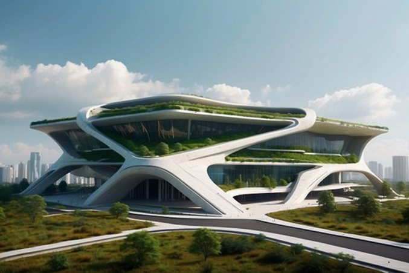

Al Mashoor Files
You can download your presentation videos, Microstation Files, etc. here.

Very good!

Turned into sketch using fotor.com

Check out the Microstation files in the download package.

What it looks like in LumenRT
Rendering with ArchiVinci.com
Sample 1

Sample 2
Logos
Logo1 with transparent background.
Logo2 with transparent background.
Logo3 with transparent background.
Advance
From the package you downloaded above, in the LumenRT folder, you can find a "design31-Penang Reclamation Island.dgn" file. The file has the Penang Reclamation Island Terrain attached to it. You can open the file in Microstation and then select Visualization, and then launch Lumen RT to start working on it. To learn more about the attachments, you can have a look at the tutorial here or section 5.2.2 in my citaldeck.space website.
Should you need to make alterations to your building model in microstation. Use the "desgin30.dgn" file which is already in the package you downloaded above.
Keep up the good work!